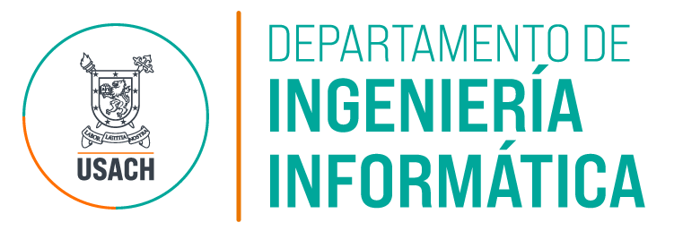

Analizar publicaciones
Explora artículos, autores, colaboración, revistas, impacto y reportes bibliométricos del departamento.

DIINF USACH
Selecciona una app y entra directo al panel.
Explora artículos, autores, colaboración, revistas, impacto y reportes bibliométricos del departamento.
Revisa memorias, profesores guía, líneas de trabajo, años, estudiantes y patrones de titulación.